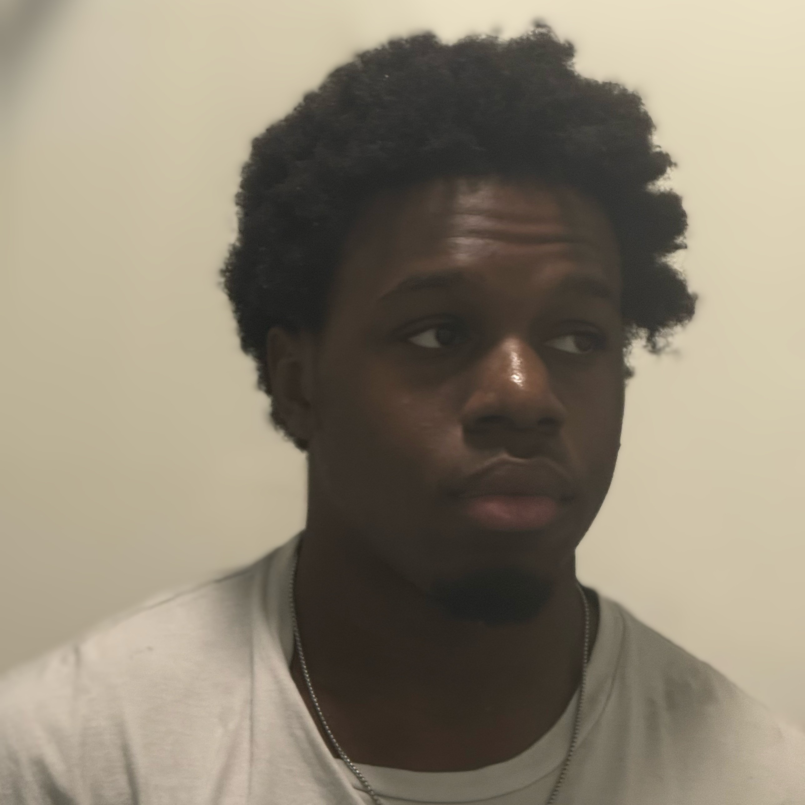

Lab Members
Principal Investigator
 |
Bo Wang
Assistant Professor Office Phone: +1 (212) 650-5204 Links: ORCID, Google Scholar, ResearchGate, LinkedIn |
Graduate Students
 |
Tianyu Han
Ph.D. Student Tianyu Han received his B.S. degree in Mechanical Engineering from Michigan State University, East Lansing, Michigan, USA, in 2020, and the M.S. degree in Mechanical Engineering form Washington University in St. Louis, St. Louis, Missouri, USA in 2021. Currently he is a Ph.D. student in Mechanical Engineering department at CCNY. His research interests include nonlinear systems, control, and underactuated systems. Email: than000@citymail.cuny.edu |
 |
Ishvar Sitaldin
Master's Student Ishvar Sitaldin is a Master’s student in Mechanical Engineering at The City College of New York, where he also graduated Magna Cum Laude with his Bachelor's degree. His interests include robotics, control systems, and reinforcement learning, with a focus on applications in the aerospace and automotive industries. In the Autonomous Systems and Control Laboratory, his current work focuses on applying reinforcement learning techniques to enhance the autonomy and control of mobile robots. His research is complemented by his experience in the CCNY BioWear Lab, where he investigated intrinsic sensors and gained expertise in advanced manufacturing. Outside of the lab, Ishvar demonstrated strong leadership skills during his undergraduate studies, having served as the elected Secretary for the Harlem Launch Alliance and as a Peer Mentor for the S Jay Levy Fellowship. He is driven to apply his diverse research and leadership experience to develop innovative engineering solutions. Email: isitald000@citymail.cuny.edu, LinkedIn: https://www.linkedin.com/in/ishvarsitaldin/ |
 |
Yubai Liang
Master's Student Yubai Liang is pursuing her master's degree in Mechanical Engineering at CCNY, where she previously completed her bachelor's degree in the same field. She is passionate about developing innovative solutions and embracing new experiences. Email: yliang007@citymail.cuny.edu |
Undergraduate Students
|  | Iruka Onwubiko
Undergraduate Student Iruka Onwubiko is an undergraduate Mechanical Engineering student at The City College of New York (CCNY) with a strong interest in how physical systems are designed, analyzed, and optimized, especially in the context of robotics. Alongside his engineering studies, he actively works with software and computer science in his spare time, building applications and exploring system design, automation, and intelligent tools. He has also taken on leadership roles within the National Society of Black Engineers (NSBE), previously serving as chapter president, and is driven by continuous self-improvement and creating work that has real-world impact. Email: ionwubi000@citymail.cuny.edu |
Theses and Dissertations
Junquan Wu, “Reinforcement Learning Control for Mobile Robot Parking with Safety Constraints,” Master's Thesis, The City College of New York, New York, NY, United States, December 2025. [pdf]
Alumni
| Semester | Name | Academic Level |
| 2025 Fall | Junquan Wu | Master's Student |
| 2025 Spring | Michael Wang | Undergraduate Student |
| Adrian Garcia | Undergraduate Student | |
| Fraylin Sanchez | Undergraduate Student | |
| Daniel Santiago | Undergraduate Student | |
| Matthew King | Undergraduate Student | |
| 2024 Fall | Mohammed Bah | Undergraduate Student |
| Renato Fernandez | Undergraduate Student | |
| Varin Sawh | Undergraduate Student | |
| Hannah Lilly | Undergraduate Student | |
| Carlos Stalin Calle | Undergraduate Student | |
| Christopher Colón Espinal | Undergraduate Student | |
| Ryan Fong | Undergraduate Student | |
| Leonidas Kalpaxis | Undergraduate Student | |
| 2024 Summer | Amit Sarker | Undergraduate Student |